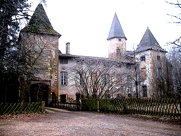
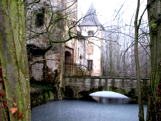
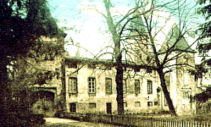
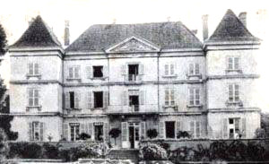
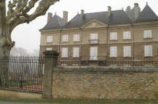

Recensement Jean-Claude Truffet





| Département | 71 — Saône-et-Loire |
| Canton | La Chapelle-de-Guinchay |
| Commune | Créche-sur-Saône |
| Type d'édifice | Château |
| Période d'origine | XIV |
ESTOURS, deux châteaux dans la commune de Crèche, Estours du XIVe siècle, les premiers seigneurs connus sont Duran et Renaud de Feurs, d'origine lyonnaise. Entre 1437 et 1443, malgré l'établissement par les Maconais d'une garnison de douze hommes, les milices Maconaises pillent en 1479 et brûlent la place pour se venger d'une reddition aux troupes royales qu'ils jugent trop hâtive. Les descendants de Renaud de Feurs en 1561 conservent le fief. Après François de Nanton en 1609 époux de Philiberte de Feurs, la seigneurie passe à Charles Damas.
Au XVIIe siècle, le domaine échoit à des fermiers qui le laissent à l'abandon. Puis en 1713 acquisition par Louis Durret. En 1725 à la demande du précédent, des réparations et des transformations sont effectuées par Michel-Ange Caristie, architecte lyonnais.
En 1827 mort du propriétaire Louis Charrier de La Roche, alors évêque de Versailles. En 1842 le château est vendu par les héritiers à Emile Devienne en 1845 qui ce dernier fait démolir l'aile sud, faisant ainsi disparaître les traces d'une ancienne entrée depuis longtemps obstruée et la chapelle attestée dès le XVIe siècle.
En 1974: restauration entreprise par M. Mélinand.
THOIRAT; Le fief de Thoirat à Créches était passée, depuis le IXe siècle, aux mains de multiples seigneurs lorsqu'elle parvint, en 1749, à Antoine-Alexandre de Thy, époux de Christine de La Fage, c'est leur fils, Philibert-Joseph de Thy, qui fit construire, à partir de 1779, un nouveau château à côté de la modeste maison forte médiévale, en fort mauvais état, dont les deux tourelles devaient être en partie démantelées en 1794, prélude à sa définitive disparition. Le nouveau château, dont la construction est parfois attribuée à J-P Caristie, fut achevé avant 1787. En 1794, il fut saisi et vendu à Philibert Vacher, un artisan, qui le céda peu après à Jean Pierre Canard dont descend le propriétaire actuel.
ESTOURS, le château occupe un quadrilatère irrégulier cerné de douves en eau, seules subsistent les ailes nord et ouest, l'aile nord est flanquée aux deux extrémités de sa façade donnant sur les douves, les tours carrées demi-hors uvre plus élevées d'un demi-étage, la porte charretière, précédée d'un pont de pierre, s'ouvre sous la tour nord, le passage auquel elle donne accès débouche dans la cour à côté d'une tour hexagonale adossée à la façade sud du logis, l'aile ouest est composée de deux bâtiments implantés dans le prolongement l'un de l'autre, un gros bâtiment rectangulaire à un étage carré, construit vraisemblablement au XVe siècle sur des bases plus anciennes et remanié au cours des siècles suivants, et dont l'un des angles extérieurs est défendu par une échauguette circulaire récemment restaurée, un bâtiment plus étroit, dont le rez-de-chaussée abrite des communs. À l'extrémité sud de cette aile se dresse une grosse tour ronde qui fut peut-être le donjon primitif et dont les murs ont 1,40 mètre à la base, dans l'angle formé par les deux ailes se trouve une haute tour d'escalier hexagonale.
THOIRAT; Le château consiste en un corps de logis rectangulaire couvert d'un toit à croupes et flanqué à ses extrémités de deux ailes en retour d'équerre en légère avancée sur ses deux façades, au centre de chacune des façades, un avant-corps d'une travée est couronné d'un fronton, sculpté d'un cartouche aux armes des Thy. Le seul autre élément décoratif de cet ensemble austère est le balcon de pierre sur consoles sur lequel donne, au premier étage, une porte-fenêtre. Parmi les communs, assez disparates, se trouve un long bâtiment couvert d'un toit brisé percé de lucarnes à ailerons.
Famille de Renaud de Feurs
"
Château d'Estours et de Thoriat